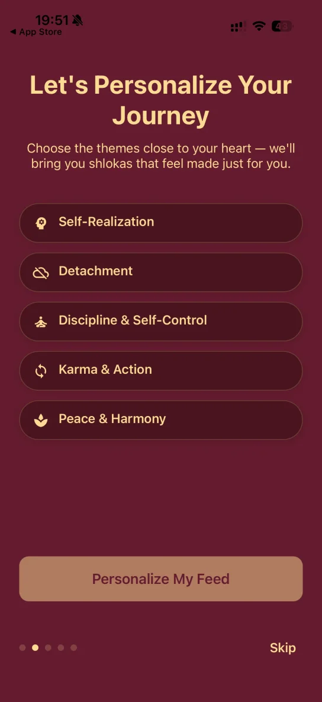
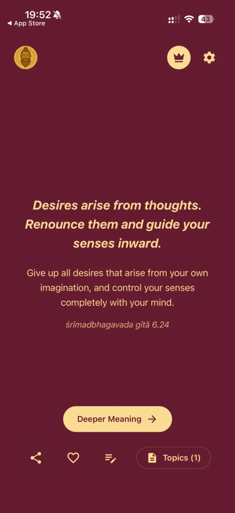
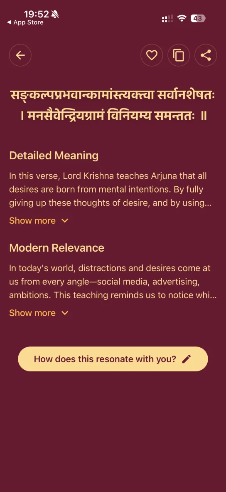

Bhagavad Gita & ancient Hindu scriptures, one shloka a day
Daily shlokas from the Bhagavad Gita
& ancient scriptures.
Wisdom delivers one shloka a day — drawing primarily from the Bhagavad Gita, alongside the Upanishads and other Hindu scriptures. Each verse comes with Sanskrit text, English meaning, deeper explanation, modern relevance, and a private space to reflect.
Free to download · No account needed to start · Widgets, reminders & journaling included


